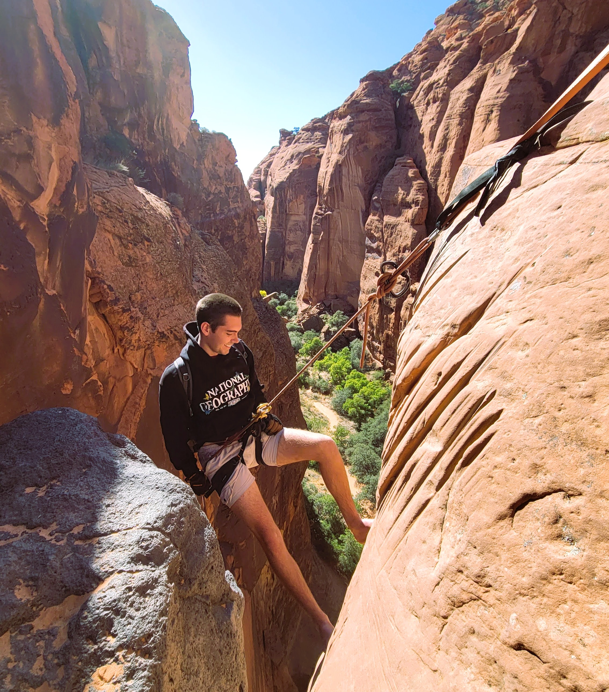

By Andrew Ashton
Source: Ropewiki.com/Utah
Utah’s stunning sandstone canyons, shaped by wind and water over millions of years, make it one of the best places for technical canyoneering. From Zion National Park to the remote San Rafael Swell, the state's rugged terrain offers both beauty and adventure for outdoor enthusiasts.
Technical canyoneering goes beyond hiking, requiring skills like rappelling, anchor setting, and navigating narrow, water-carved passages. Many routes feature sheer drops, deep pools, and tight squeezes, making preparation and technical knowledge essential. Whether you're an experienced canyoneer or a beginner with a guide, Utah’s canyons promise an unforgettable challenge in a world-class outdoor setting.
This map uses community-contributed data from RopeWiki to visually explore potential canyoneering routes. Each pin provides key details about a canyon, including its difficulty rating, number of rappels, and estimated duration. The routes are displayed to give an overview of their length and topography.
Select a canyon to learn more, or use the Filter tab to refine results based on specific attributes. For more in-depth information, follow the provided links to RopeWiki pages for each canyon.
yo yo this is my filter tool